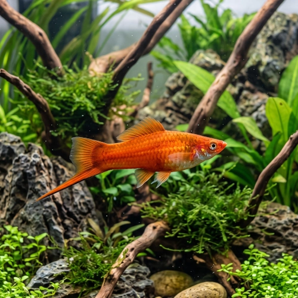

Nome popular principal
Peixe-Espada
Peixe-Espada, Espada, Xipho
Ficha de peixe
Vivíparos
Um vivíparo clássico e muito ativo que se destaca no aquário por suas cores vivas e o formato único da cauda dos machos.

Nome popular principal
Peixe-Espada, Espada, Xipho
Nome científico
Nome técnico essencial para taxonomia, cruzamento de manejo e referência editorial consistente.
Dificuldade de manejo
Use este nível como referência inicial, sempre considerando volume, estabilidade e compatibilidade do aquário.
Seção 1
Seção 2
Seções 4 a 6
Peixe-Espada tem hábito alimentar onívoro. Excelente. 1 a 2 vezes ao dia. Alimenta-se facilmente de rações secas em flocos e grãos, suplementadas com spirulina, pequenos insetos e vegetais.
Machos possuem prolongamento na nadadeira caudal e gonopódio; fêmeas são maiores e não possuem a espada. Tipo de reprodução: Vivíparo. Dificuldade de reprodução: Fácil. Fêmeas dão à luz filhotes vivos e formados a cada 4 a 6 semanas, sendo benéfico ter vegetação densa para abrigo dos alevinos.
Alta. Substrato recomendado: Cascalho fino ou areia de rio de granulometria média. Necessidade de esconderijos: Média. Aprecia aquários bem plantados com espaço livre na frente para nado rápido e vegetação nas laterais e fundo.
Seção 7
Fêmeas adultas podem chegar aos 14 cm de comprimento total, exigindo aquários ligeiramente maiores do que outros vivíparos como platys.
Seção 8
O ideal é ter 1 macho para cada 2 ou 3 fêmeas, evitando que o excesso de perseguições dos machos estresse uma única fêmea.
Sim, é um excelente saltador e necessita obrigatoriamente de aquário bem tampado.
Sim, como pertencem ao mesmo gênero (Xiphophorus), podem cruzar e gerar híbridos férteis.